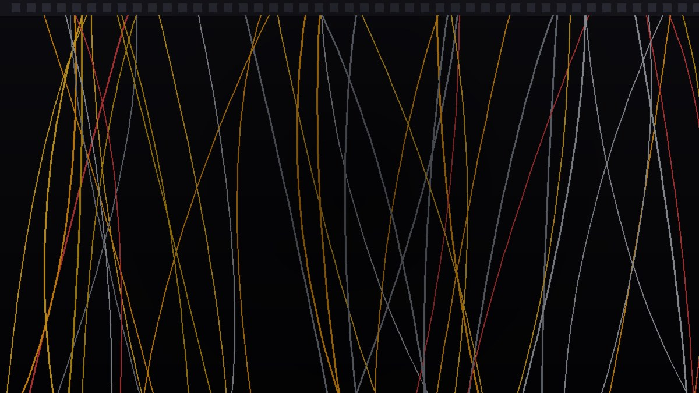
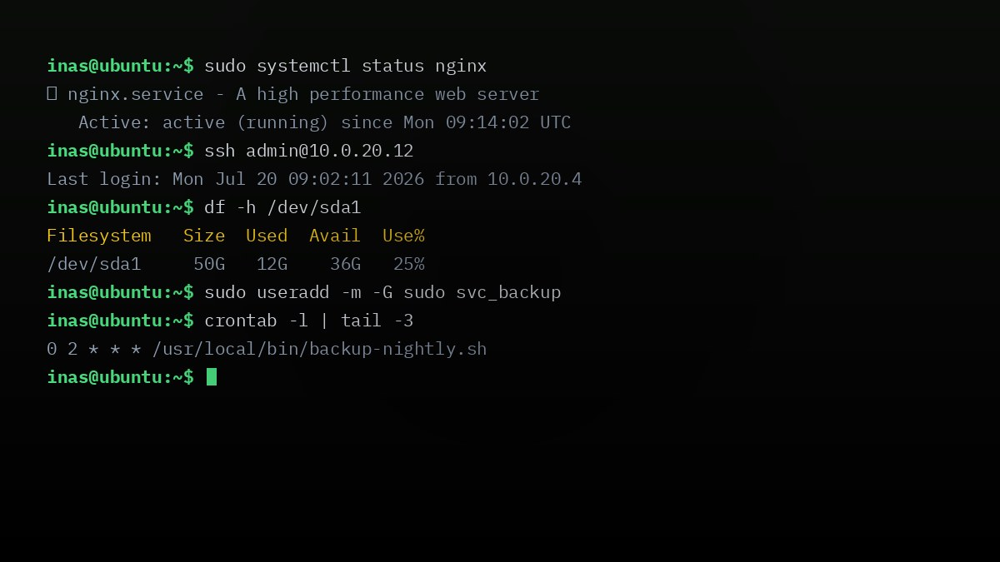

/projects
Enterprise network architectures, directory services, and server setups managed by me.
Engineered and deployed a resilient multi-subnet network architecture featuring redundant gateways and VLAN isolation using MikroTik routers and Cisco manageable switches. Integrated custom DHCP, NAT, and advanced firewall rules to secure corporate assets.
Configured and implemented a centralized printing environment with MyQ Server integration across multiple corporate floors. Established secure swipe-to-print protocols, print-queue auditing, and automated diagnostic alerts to minimize device downtime.

Set up and managed Active Directory Domain Services (AD-DS) and DNS servers on Windows Server 2022 to provide secure identity management, centralized user authentication, and group policy deployment for corporate endpoints.

Commissioned and maintained dedicated Linux environments hosting localized file servers and remote system administrative services. Configured secure SSH keys, automated database backups, and network directory shares.